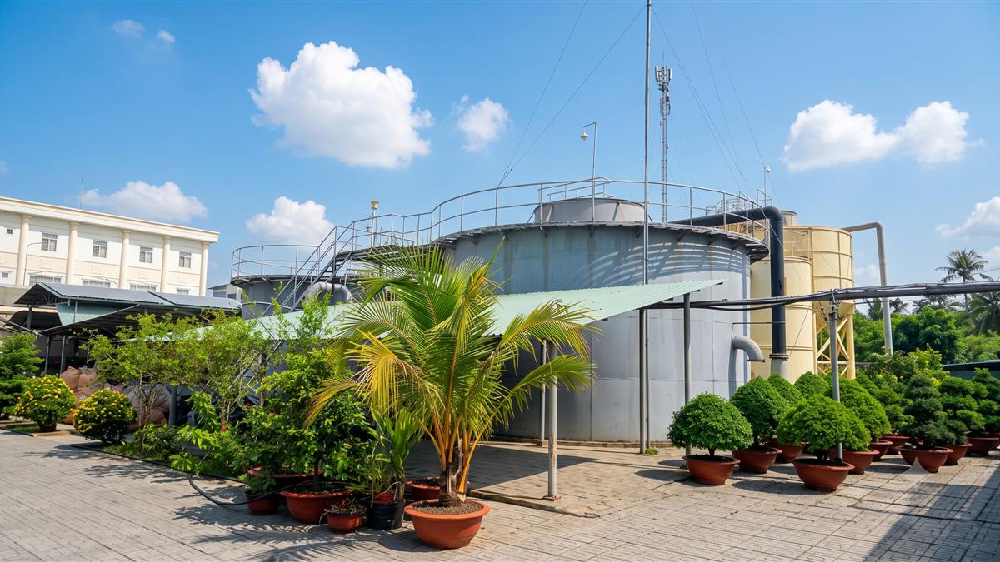
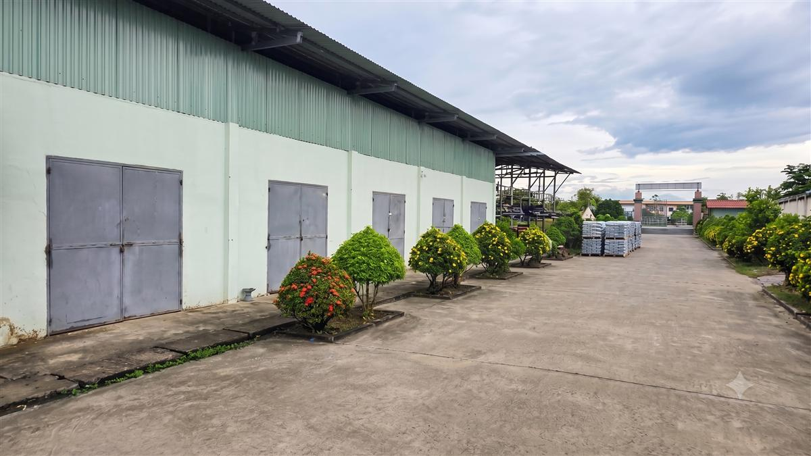
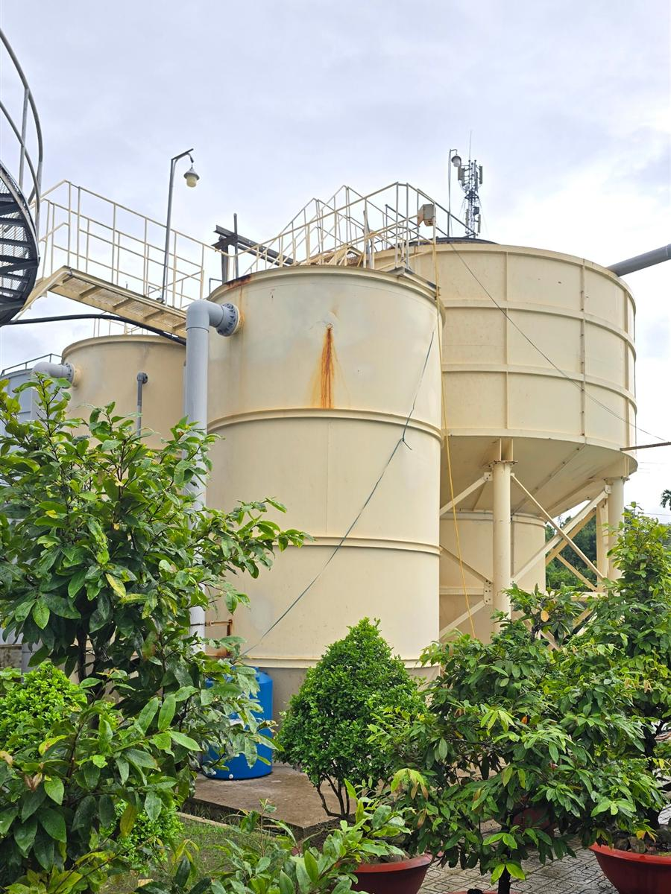
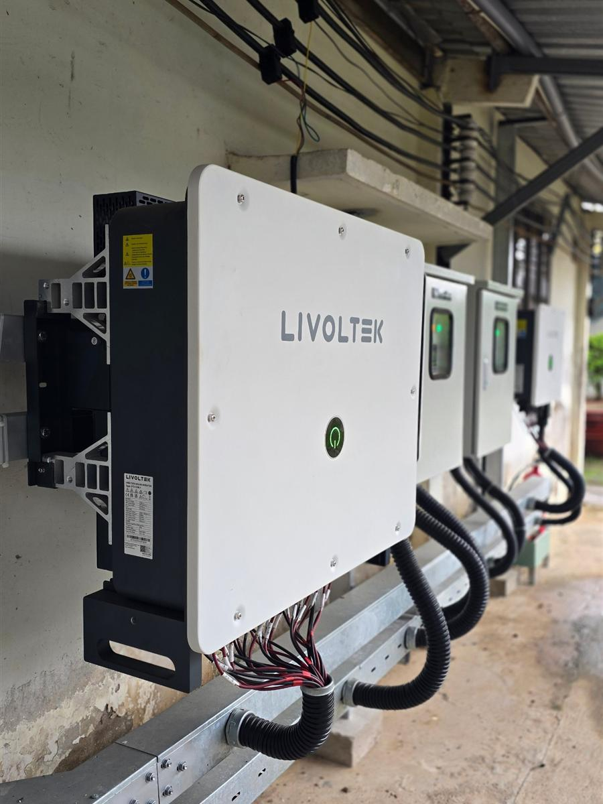
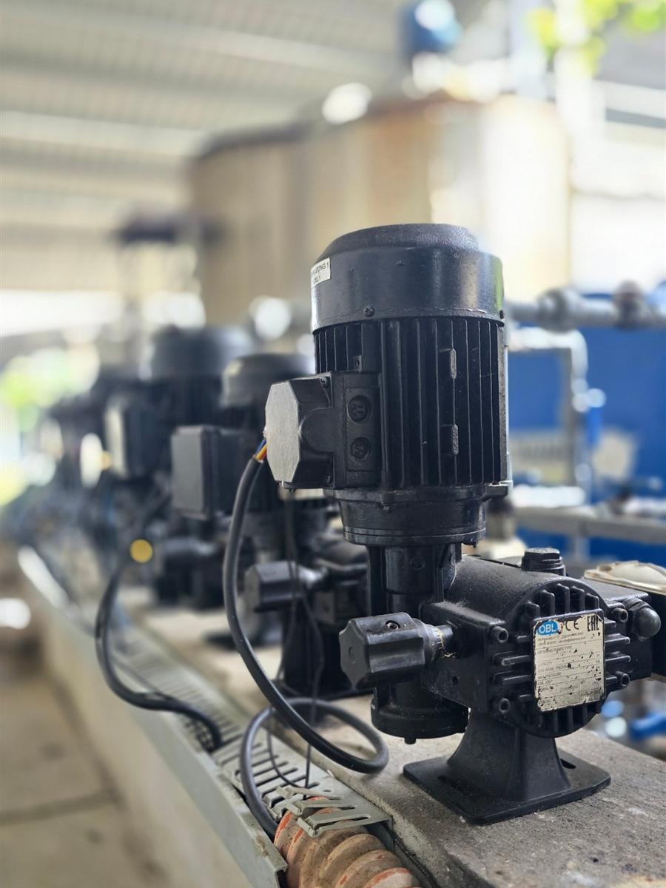

Công ty TNHH Cấp Thoát Nước Mỏ Cày thành lập năm 2011, kế thừa ngành cấp nước Bến Tre hình thành từ năm 1968. Chúng tôi cấp nước sạch và xử lý nước thải cho 6 xã khu vực Mỏ Cày, tỉnh Vĩnh Long, vùng đất cuối nguồn Mê Kông.
Trở thành mô hình công ty nước tinh gọn nhất tại Vĩnh Long, với tỷ lệ thất thoát được tối ưu dưới 15%.
Đảm bảo nguồn nước sạch và an toàn đến từng hộ gia đình tại Mỏ Cày, bảo vệ sức khỏe và chất lượng cuộc sống cho cộng đồng.
Bốn điều đội ngũ Mỏ Cày cùng cam kết giữ: Trách nhiệm, Minh bạch, Tinh gọn, Đoàn kết.
Đã nhận nhiệm vụ thì nỗ lực hoàn thành; sẵn sàng xử lý sự cố bất kể giờ giấc; có bản lĩnh nhận lỗi và khắc phục.
Tuân thủ đầy đủ quy định pháp luật; giao tiếp hai chiều, mọi đề xuất của nhân viên được lắng nghe và phản hồi.
Làm việc khoa học, đúng quy trình, liên tục cải tiến để tối ưu chi phí và hạn chế rủi ro.
Cùng đề xuất và chọn giải pháp, cùng vượt thử thách và tận dụng cơ hội để đạt mục tiêu chung.
Ba nhà máy nước, 623 km đường ống và đội trực sự cố 24/7 giữ nước ổn định qua từng mùa. Chất lượng nước kiểm nghiệm định kỳ tại phòng thử nghiệm được công nhận.
| Chỉ tiêu năng lực | Giá trị |
|---|---|
| Công suất thiết kế | 15.900 m³/ngày đêm |
| Số nhà máy / trạm cấp nước | 03 nhà máy |
| Chiều dài mạng lưới đường ống | 623 km |
| Số đồng hồ / đấu nối | 27.186 |
| Phạm vi phục vụ | 6 xã khu vực Mỏ Cày |
Số liệu vận hành năm 2026.
Vài góc chụp tại nhà máy và khu vận hành của công ty.

Cụm bể thép nơi nước mặt được lắng, lọc rồi khử trùng trước khi bơm vào mạng lưới. Sân nhà máy trồng cây, giữ mặt bằng gọn và sạch.

Ống, phụ kiện và vật tư sửa chữa xếp sẵn trên pallet. Khi mạng lưới có sự cố, đội sửa chữa lấy đồ đi ngay, không phải chờ.

Bể lắng đáy côn cùng các bể xử lý bằng thép, có sàn thao tác và cầu thang để nhân viên kiểm tra mỗi ca.

Biến tần của hệ thống điện mặt trời tại nhà máy. Điện tự sản xuất bù một phần điện chạy máy bơm, giảm chi phí vận hành và bớt phụ thuộc lưới điện.

Dàn bơm châm hóa chất xử lý nước theo liều đặt sẵn. Liều lượng được chỉnh theo chất lượng nước mặt từng ngày, nhất là mùa mặn và mùa lũ.
Liên hệ công ty để được hướng dẫn nhanh, hoặc xem ngay dịch vụ cấp nước.